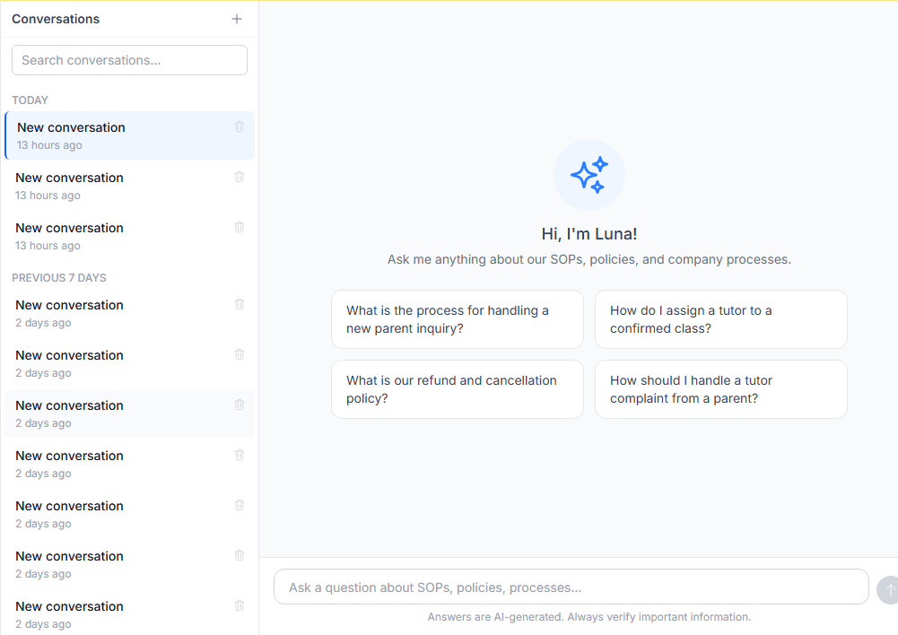

One core owns truth. Specialised systems add focused capability.
Clear ownership prevents duplication: connected systems exchange governed context while retaining their distinct responsibility.
SIMSAuthoritative service core
Core tutoring identities, requests, classes, invoices and payments.
Channel
Parent App
Family access and action.
Channel
Tutor App
Tutor delivery touchpoint.
Workspace
Ripple
Focused staff operations.
Curated read model
Owner analytics
Decision visibility.
Distinct domains
Learnest + Kelasapp
Learning experiences.
Specialist domains
Creative Hub + Finch
Growth and conversations.
Connected does not mean one database.
Current architecture and approved domain boundaries
07
System portfolio
Portfolio breadth comes from different systems doing different jobs.
The ecosystem combines a dependable core, specialised workspaces, stakeholder channels and reusable product capabilities.
Authoritative core
SIMS
The operational source of truth for the tutoring service.
People & identityRequests & matchingClasses & reportsInvoices & paymentsOperational control
Live · May 2025
Specialised workspace
Ripple Suite
Focused staff experiences around governed SIMS services and operational context.
Current capability

Stakeholder channels
Parent + Tutor
Purpose-built touchpoints for service participation.
RequestsSchedulesReportsActions
Learning domains
Learnest + Kelasapp
Digital learning and course experiences remain distinct from core tutoring operations.
Separate product truthSpecialist capability
Finch + Creative Hub
Conversation handling and governed creative production support service and growth.
Focused domainsOperating enablement
Analytics + Agent OS
Decision visibility and disciplined delivery turn technical capability into repeatable operations.
Human accountable
Portfolio view · status labels distinguish current capability and separate domains
08
Accountable ownership
Platform maturity includes accountable human ownership.
Technology carries context and control. People remain responsible for the quality of every service and business outcome.
PLExperience
Parents & learners
Clear requests, schedules, progress and support.
Outcome · confidenceTTDelivery
Tutors
Suitable assignments, visible expectations and timely actions.
Outcome · qualityCXContinuity
CX & operations
Shared context across matching, delivery and issue resolution.
Outcome · continuityFNIntegrity
Finance
Traceable billing, collection, reconciliation and settlement.
Outcome · controlMGDemand
Marketing & creative
Structured content and campaign execution connected to growth.
Outcome · relevancePECapability
Product & engineering
Reliable systems, governed change and reusable foundations.
Outcome · leverage
LDStewardship
Leadership sees the whole operating picture.
Service quality, efficiency, trust and growth are managed together—not as disconnected dashboards.
Outcome · informed direction
Responsibility model · systems support decisions; people remain accountable
09
Trust and resilience
Platform health is a continuous operating discipline.
Maturity is visible in how the organisation prevents issues, detects change, responds, recovers and learns.
Healthy platformService · money · trust
GovernProtectObserveRespondRecoverImprove
Current operating discipline + dated recovery evidence · not a guarantee of future uptime
10
Maturity through evidence
Maturity is accumulated operating capability, not a self-awarded score.
The strongest proof is a visible progression from basic operation to connected, controlled and reusable capability.
01
Foundation
Core service can operate.
02
Connected
People and systems share context.
03
Controlled
Authority and evidence are explicit.
04
Intelligent
Signals improve decisions.
05
Reusable
Capability can extend deliberately.
Service lifecycle
Demand through delivery and support.
Evidence · connected workflow
Financial integrity
Service evidence remains tied to money movement.
Evidence · governed transactions
Stakeholder experience
Focused channels reduce unnecessary complexity.
Evidence · purpose-built access
Data & insight
Operational signals support accountable decisions.
Evidence · curated visibility
Reliability
Monitoring and recovery are operating practices.
Evidence · health discipline
Organisational learning
Knowledge survives individual tasks and releases.
Evidence · Agent OS
Evidence model · no external maturity certification or numerical score claimed
11
Capital-efficient capability
Healthy operations create business leverage.
The commercial value is not technology alone. It is the compounding effect of reliable service, efficient work and stronger stakeholder trust.
01
Reliable service
Clear state, fewer blind handoffs and more consistent delivery.
02
Efficient operation
Teams spend more attention on service and less on avoidable coordination.
03
Greater trust
Parents, tutors and staff can act with better context and confidence.
04
Revenue conditions
Retention, referral, capacity and new offerings become easier to support.
Business logic · describes enabling conditions, not guaranteed financial outcomes
12
Measurement discipline
A balanced scorecard keeps growth connected to service quality.
No single metric defines platform health. The operating view must connect technical confidence, team efficiency, stakeholder trust and sustainable growth.
01
Health
Can the platform support its critical journeys reliably?
Operating signal patternAvailability, error and recovery signals are read together.